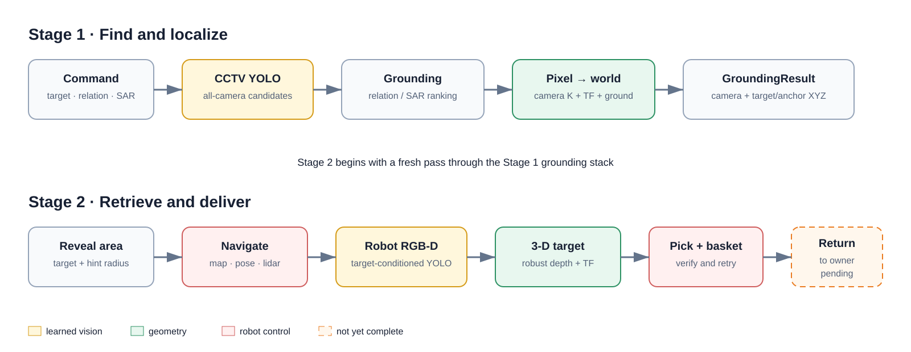
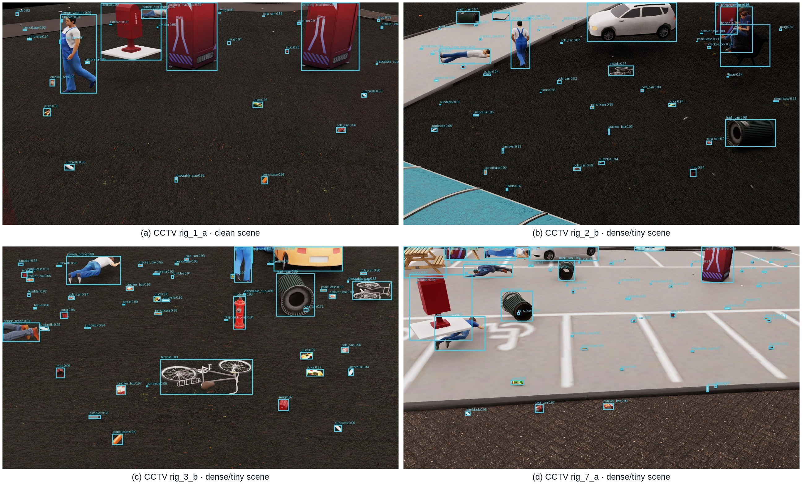
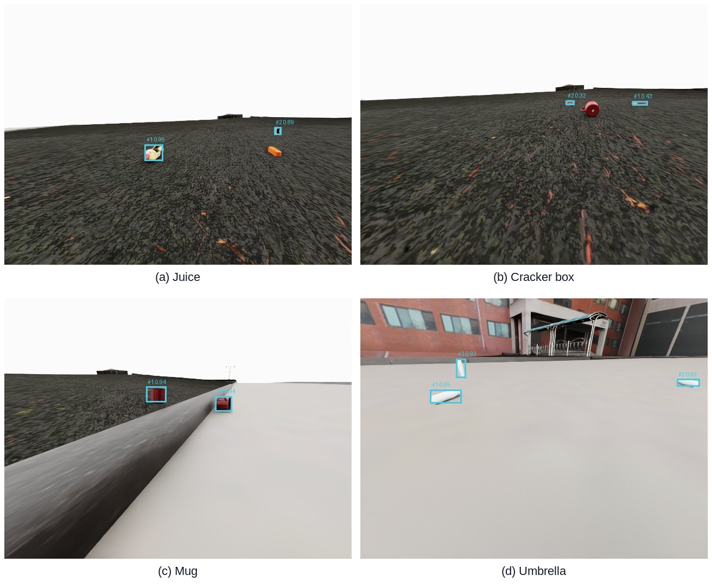
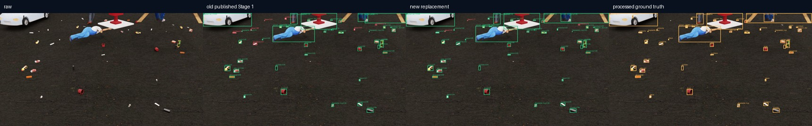
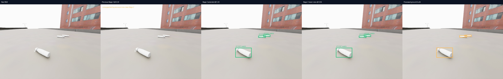

pipeline-overview.svg — compact architecture; dashed means incomplete.
stage1-cctv-detections.jpg — best qualitative Stage 1 overview.
stage2-nearfield-detections.jpg — best qualitative Stage 2 overview.
stage1-detector-comparison.jpg — same-frame Stage 1 model evolution.
stage2-detector-comparison.jpg — same-frame Stage 2 target-detector comparison.
stage1-training-curves.png
stage2-training-curves.png
stage1-pr-curve.png
stage2-pr-curve.png